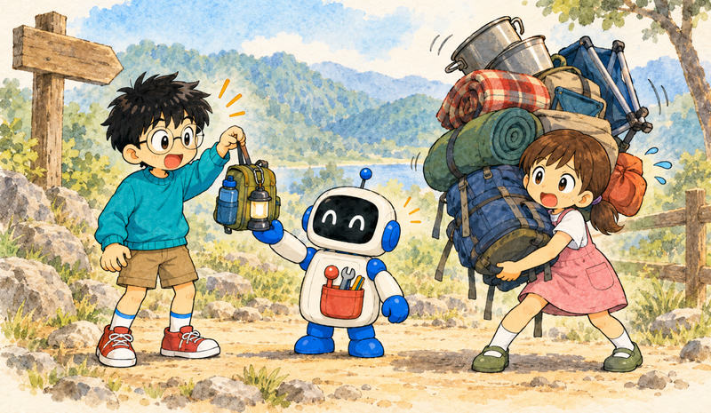

Feature 14 · VERBATIM · 2026 10
unikernels were hard. key word: were.
Justin Cormack, who worked on MirageOS and Unikernel Systems back in the day, has been noticing what I’ve been noticing: people are discovering (or rediscovering) unikernels again. He’s running a series of conversations on the topic for his newsletter, and I was first up. He emailed me, and five minutes later I was talking to him from the pub with a stein of beer in hand. We went deep on Mirage, Orleans, Haskell, Nix, Cursed and a whole lot more.

Here’s the gist, written up properly, with chapter links at the bottom if you want to jump to a specific part of the conversation. Justin’s edited transcript is over at Ignore Previous Directions.
Unikernels were hard. Key word: were. Now we have AI.
what a unikernel is, and why they were hard
I first ran into unikernels around 2015. I’d staffed up a team of Haskellers and gone pretty deep on functional programming. Where there are Haskellers, there are OCaml programmers, and from there you find MirageOS. Great idea. I played with it back then.
A unikernel is the idea that your application is the operating system. There’s no userland. If you want a web server, DNS, or to send an email, there’s nothing you can fork or spawn. You have to write those things as libraries in your application.
That was the friction. Justin remembers it well: when they were building Mirage, they had a TCP stack and an HTTPS stack, but there was almost nothing for storage. They were pulling drivers out of NetBSD because they could run them in userspace. It was hard back then.
There’s a lot of dogma in our industry. Nix is hard. Bazel is hard. Unikernels are hard. Yes, they were. These hard concepts are now in the model weights. All you’ve got to do is prompt for them and, cognitively, get rid of the dogma that they’re hard.
the operating system is design debt
Every application that isn’t a unikernel was built on the assumption that there’s an application, and then there’s an operating system underneath. Why do we even have an operating system? Because forty years ago there was a human operator. I’ve done IBM 5250, AIX, Solaris, and mainframes. The multi-user operating system exists because a person sat in front of it, and then we put the application on top.
I consider that design debt, and here’s why it matters right now. Applications get popped. They were getting popped before AI. Someone pops the userland application and gets a shell. That shell is a VIP butler service for exfiltration.
With a unikernel, the attack surface is much smaller. If the functionality isn’t in the application (the operating system), then the attacker is screwed. There’s no next hop.
Justin pushed back here, and fairly. Attack-surface reduction is something people are very fuzzy about. You can remove the shell from a Linux container, but almost every Linux environment still has something that’s effectively an interpreter. You can execute a new program without a writable filesystem. You’ve still got memory safety and gadgets to worry about.
All true. But look at what we’ve been doing for twenty-six years. The earliest adage I remember from the SunOS and cgi-bin days was “don’t put the compiler on production.” Then came build containers and production containers. Then Chainguard. We keep chipping away at the attack surface, instead of going in the opposite direction and ensuring there is no attack surface.
And this is the bit people miss: if there’s no shell and no interpreter, there’s nothing in the model weights that knows what to do next. That turns a drive-by (pick your framework’s RCE of the week and you’ve got a shell, and the model weights know what to do with shell access) into a targeted attack that needs your source code.
you can just port the missing libraries now
The classic objection: your unikernel needs to talk to Stripe, and OCaml doesn’t have a Stripe library. Before AI you’d sigh and write it. Now? Run a loop to port the Go library to OCaml. Here you go: Stripe in a unikernel.
Justin had a great example of the same thing. He’d been building minimal Linux OS images for appliances, which is halfway to a unikernel anyway, since you’re only running one application as PID 1. He needed to make an XFS filesystem. Rather than drag in xfsprogs and everything it brings with it, he sat down with an agent and had it write mkfs.xfs in Rust, producing byte-for-byte identical output, with every flag interpreted. It reverse-engineered the on-disk formats one by one, with tests across block sizes. It took a few hours.
That works because the original tool is a golden oracle. Generate filesystems at different sizes with both implementations and diff them. Port the tests across. Automate it.
Storage was the other big gap. Most workloads these days are cloud-shaped, even on-prem, so take the turbopuffer approach: S3 as your primary, infinitely growable storage, with a local NVMe block cache and an LRU (or whatever caching algorithm you like) for the hot bits. Justin is a massive “S3 for everything” fan too. As long as latency isn’t the constraint, you get infinite storage with multi-user access, and you can build everything on it.
nix machine tests and overlays
Justin had been experimenting with Nix too, and was surprised that the first time he got an agent to prototype an OS, it built all the tests into flakes.
Nix the language sucks. Nixpkgs is great. NixOS machine tests are the bee’s knees: you write a test that spins up a fleet of machines and exercises the interaction between your network rules and your application. It’s the thing people don’t know about.
And when something upstream is broken, or there’s a supply chain problem in your dependencies, that’s just an overlay.
If you have to tool-call a human, also known as “Dear Maintainer”, who might be on holiday or might have abandoned the project, and wait a day, two days, or even five minutes, that’s not AGI.
We’re building recursive products here. Agents need the ability to modify the world as first-party source, not as third-party bundled binaries. We’re going back to the contrib folder and Unix patches.
if you care about security, you have two choices
Justin asked what unikernels still need for people to discover them. Honestly, it’s this. We’ve raised two generations of developers who don’t even know they’re a thing.